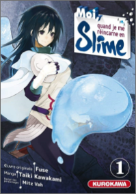

<!DOCTYPE html>
<html lang="en">
<head>
    <meta charset="UTF-8">
    <meta http-equiv="X-UA-Compatible" content="IE=edge">
    <meta name="viewport" content="width=device-width, initial-scale=1.0">
    <meta name="description" content="Bookanga est une boutique spécialisé dans la vente de manga et de produit dérivés">
    <link rel="stylesheet" href="./assets/css/navbar.css">
    <link rel="stylesheet" href="./assets/css/reset.css">
    <link rel="stylesheet" href="./assets/css/item.css">
    <link rel="stylesheet" href="./assets/css/shop.css">
    <link rel="stylesheet" href="./assets/css/font.css">
    <link rel="stylesheet" href="./assets/css/footer.css">
    <link rel="stylesheet" href="./assets/css/card.css">
    <title>Bookanga</title>
</head>
<body>

<header>
    <a href=# id="a-logo"></a>
    <a href=# id="a-basket"></a>
</header>

<section id="item">
    
        <main id="item-main">
                <!-- <article class="card">
                    <div class="img-container">
                        
                    </div>
                        <div class="text-container">
                            <h1 class="title">Moi quand je me réincarne en slime</h1>
                            <p class="author">Kurokawa</p>
                            <p class="tome">Tome1</p>
                            <p class="description">Satoru, employé de bureau lambda, se fait assassiner par un criminel en pleine rue. Son histoire aurait dû s'arrêter là, mais il se retrouve soudain réincarné dans un autre monde sous la forme d'un Slime, le monstre le plus faible du bestiaire fantastique. Le voilà équipé de deux compétences uniques : ' Prédateur ', lui permettant de récupérer les aptitudes de ses adversaires, et ' Grand Sage ', grâce à laquelle il acquiert une compréhension aiguë de son environnement. Mais même muni de ces armes, ses chances de survie semblent cependant limitées...</p>
                            <div class="cost-container">
                                <p class="prix">6.65</p>
                                <button class="button-cost"><p>Ajouter au Panier</p></button>
                            </div>
                    </div>
                </article> -->
                
                
        </main>
</section>

<section id="test">
<section id="shop">

    <div class="total">
        <div id="price"></div>
        <div id="delivery"></div>
        <div id="ttc"></div>
    </div>

<section id="shop-card-container"></section>
    <!-- <article class="card">
        <div class="img-container">
            
        </div>
        <div class="second-container"
            <div class="text-container">
                <h1 class="title">Moi quand je me réincarne en slime</h1>
                <p class="author">Kurokawa</p>
                <p class="tome">Tome1</p>
                <p class="description">Satoru, employé de bureau lambda, se fait assassiner par un criminel en pleine rue. Son histoire aurait dû s'arrêter là, mais il se retrouve soudain réincarné dans un autre monde sous la forme d'un Slime, le monstre le plus faible du bestiaire fantastique. Le voilà équipé de deux compétences uniques : ' Prédateur ', lui permettant de récupérer les aptitudes de ses adversaires, et ' Grand Sage ', grâce à laquelle il acquiert une compréhension aiguë de son environnement. Mais même muni de ces armes, ses chances de survie semblent cependant limitées...</p>
                <div class="cost-container">
                    <p class="prix">6.65</p>
                    <input list="browsers" name="browser" id="browser" placeholder="Quantités">
                        <datalist id="browsers">
                            <option value="1">
                            <option value="2">
                            <option value="3">
                            <option value="4">
                            <option value="5">
                        </datalist>
                    <button><p>Supprimer</p></button>
                </div>
            </div>
        </div>
    </article> -->

</section>
</section>


<footer>
    <div class="list-footer band">
        
        <p>Bookanga</p>
        <p>70 rue des Jacobins</p>
        <p>80000 Amiens</p>
        <p>06 06 06 06 06</p>
        <p>E-mail</p>
    </div>
    <div class="list-footer navigation">
        <h2>Navigation</h2>
        <p><a href="#">Manga</a></p>
        <p><a href="#">Produit dérivés</a></p>
    </div>
    <div class="list-footer a-propos">
        <h2>A propos</h2>
        <p><a href="#">Notre Compagnie</a></p>
        <p><a href="#">Nos service</a></p>
        <p><a href="#">Conditions générales de vente</a></p>
        <p><a href="#">Politique de confidentialité</a></p>
        <p><a href="#">Contact</a></p>
    </div>
</footer>


<script defer src="https://cdnjs.cloudflare.com/ajax/libs/materialize/1.0.0/js/materialize.min.js"></script>
<script src="./assets/js/script.js"></script>
</body>
</html>